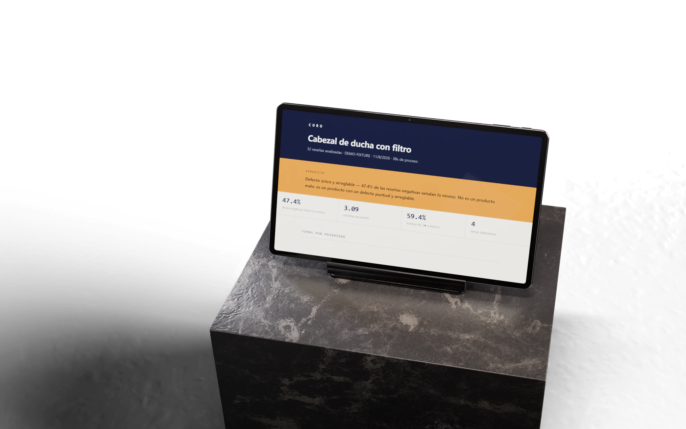
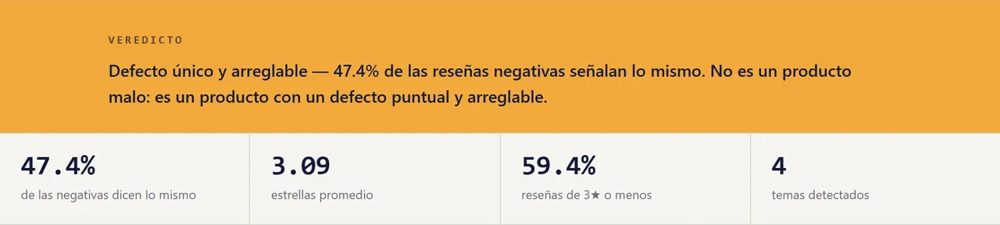
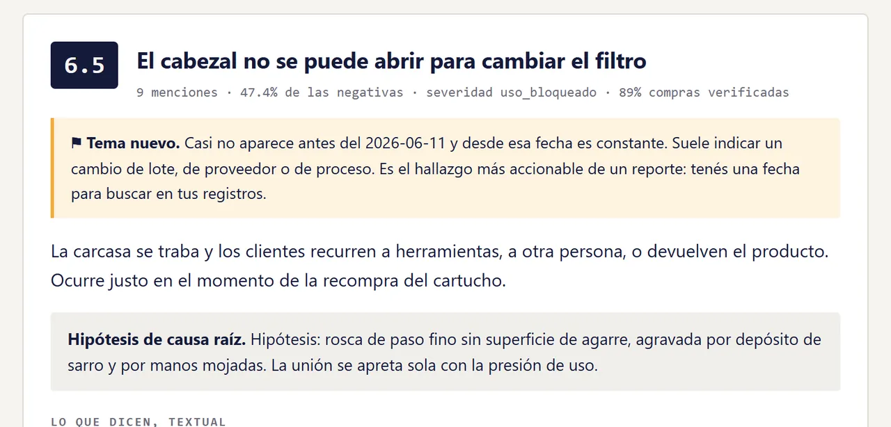
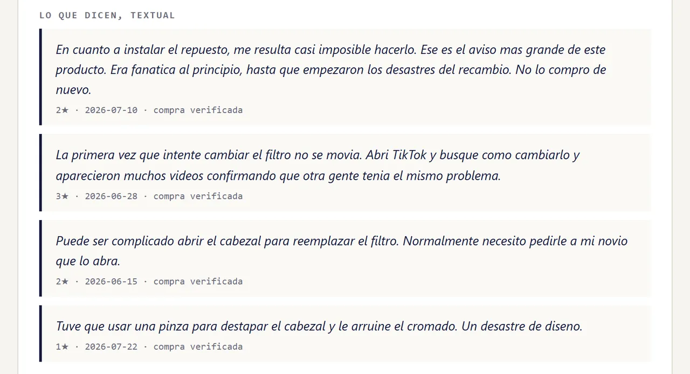
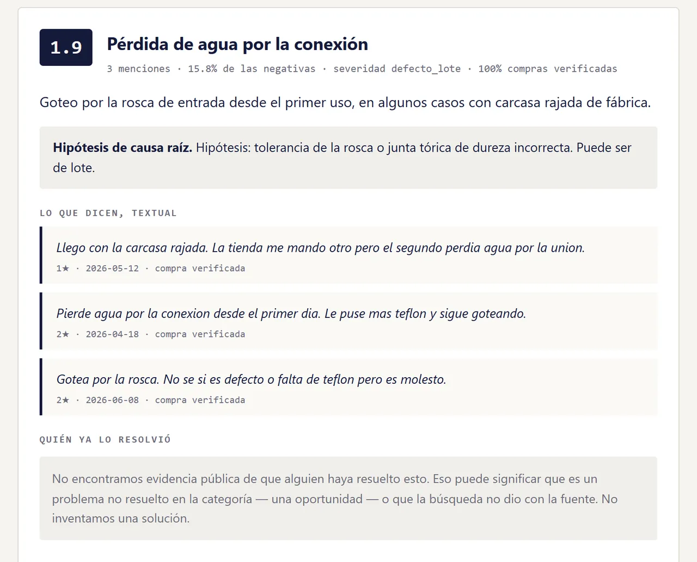
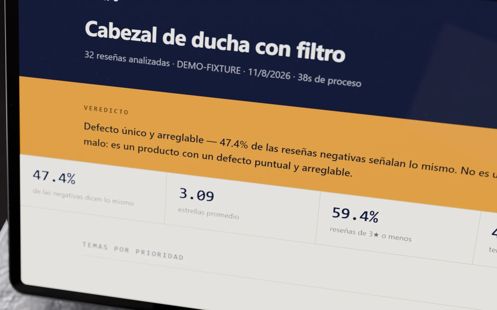
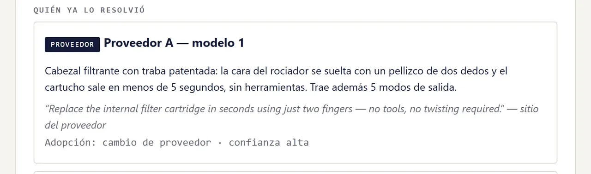
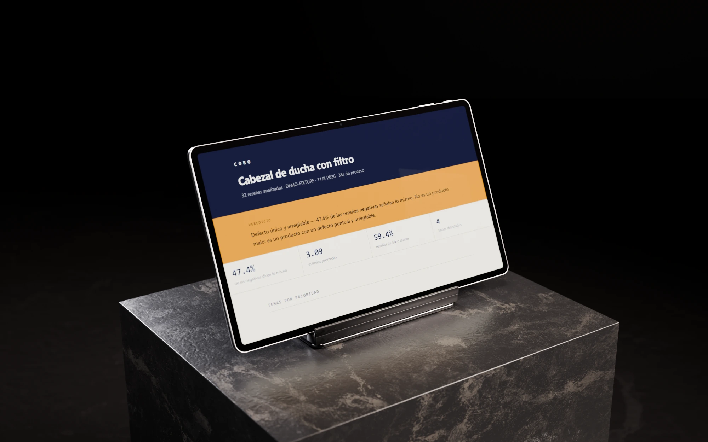
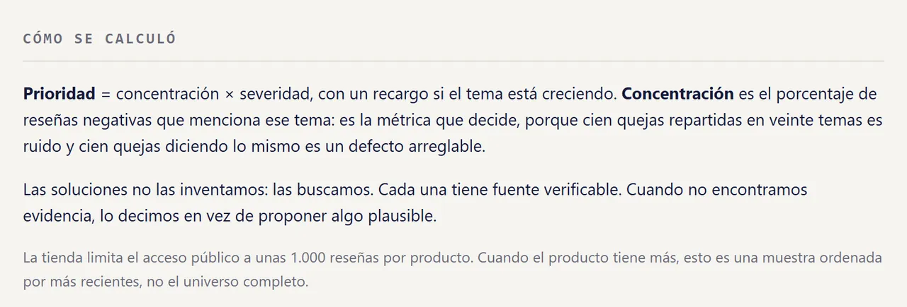

Caso de estudio
Prototipo
coro
De cientos de reseñas a un defecto concreto y a quién ya lo resolvió.
- Qué es
- Herramienta que lee reseñas públicas de un producto, agrupa el defecto que se repite y busca quién ya lo resolvió, con su fuente: un competidor, un proveedor o una patente.
- Para quién
- Quien compra, vende o fabrica: cuatro perfiles leen el mismo informe con otra pregunta.
- Estado
- Prototipo de línea de comandos que genera un informe HTML por producto.
- Mi rol
- Definí el producto y sus reglas, y dirigí el desarrollo
- Período
- Agosto de 2026
- Herramientas
- Desarrollo asistido por IA · Node.js · módulos ES · informe HTML estático
- Enlace
- Demo interna: sin enlace público
El problema
Las reseñas sobre una misma falla quedan tapadas por las quejas sobre todo lo demás.
Quien compra, vende o fabrica no tiene tiempo de leerlas ni sabe si otro ya resolvió ese defecto. El promedio de estrellas tampoco ayuda: no separa un defecto concentrado, que se puede arreglar, de un producto con quejas sueltas.
Recorrido
Un informe que se lee de arriba abajo: el veredicto, la causa, la prueba y la solución.
Informe de muestra sobre el juego de prueba: los temas, sus reseñas y la solución se cargaron a mano; coro calcula la concentración, la prioridad y el quiebre. Proveedores con nombres genéricos.
-

El veredicto dice primero si hay un defecto o sólo quejas sueltas
La métrica que decide es la concentración: qué parte de las reseñas negativas señala lo mismo. Al lado van las estrellas promedio, las reseñas de tres estrellas o menos y cuántos temas encontró.
Cómo lo comprobé Con un juego de prueba de 32 reseñas de un cabezal de ducha con filtro, una corrida real juntó el 47,4 % de las negativas en un solo tema, igual que el informe de muestra de las capturas.
-

Si una queja empezó en una fecha, el informe la da
Un tema que casi no aparece antes de un día y después es constante queda marcado como nuevo: suele ser un cambio de lote, de proveedor o de proceso. Debajo va la causa raíz probable, marcada como hipótesis.
-

Cada tema trae sus reseñas, palabra por palabra
Las citas van textuales, con estrellas, fecha y si la compra está verificada; en las capturas salen del juego de prueba. Quien lee el informe puede comprobar el tema sin volver a la tienda.
-

Cuando nadie lo resolvió, el informe lo escribe así
Las soluciones se buscan y se citan con su fuente. Si no aparece evidencia pública, el informe lo dice y aclara que puede ser una oportunidad o una búsqueda que no dio con la fuente. En el informe de muestra, ese tema no tenía una solución cargada.
También hace
- Lee las reseñas Reseñas públicas de un producto: 400 en la corrida real más grande y 1.200 en una prueba de carga.
- Revisa la muestra Valida la muestra antes de gastar en el análisis.
- Cuatro lecturas Consumidor, emprendedor, marca que compra a un tercero y marca que fabrica.
- Historial Guarda cada corrida y sube la prioridad de un tema que crece.

El hallazgo, ampliado
En 32 reseñas de prueba, casi la mitad de las quejas eran la misma.
Veredicto
Defecto único y arreglable — 47.4% de las reseñas negativas señalan lo mismo.
- 6.5El cabezal no se puede abrir para cambiar el filtro47.4%
- 1.9Pérdida de agua por la conexión15.8%
- 1.2Caída de presión percibida15.8%
- 0.9Cobro y cancelación de la suscripción de filtros15.8%
La traducción al inglés aparece sólo en la versión en inglés de esta página.
En la tarjeta, los cuatro temas del informe de muestra con su prioridad y la parte de las negativas que menciona cada uno. El primero concentra tres veces más que cualquier otro, y una corrida real sobre el mismo juego de prueba le dio también el 47,4 %. La solución es un ejemplo cargado a mano para mostrar cómo el informe cita la fuente.

Decisiones
Qué dice el informe y qué se calla.
-
Decidí
Medir concentración: qué parte de las negativas señala lo mismo.
Lo que viVeinte temas con cinco quejas no son un defecto; uno con el 47 % sí.
DescartéRankear por cantidad de quejas. La cantidad premia al tema más charlado, no al defecto que se repite.
-
Decidí
Que las soluciones se busquen y se citen con fuente, y que el informe diga cuando no hay evidencia.
Lo que viUna solución inventada se lee con la misma seguridad que una real.
DescartéQue el modelo proponga soluciones. Un «no se encontró» vale más que una solución inventada.
-
Decidí
Un informe con cuatro lecturas: consumidor, emprendedor, marca que compra a un tercero y marca que fabrica.
Lo que viLa misma queja pide cosas distintas a quien compra y a quien fabrica.
DescartéUn único informe genérico. «¿Me conviene comprarlo?» y «¿qué le reclamo a mi proveedor?» no se contestan con el mismo párrafo.
Cómo lo construí
Fijé la métrica y las reglas antes del código, y los agentes de IA construyeron un módulo por tanda.
-
Brief.
Los perfiles y la métrica se definieron antes del código: concentración, por severidad, con recargo si el tema crece.
-
Un módulo por tanda.
Análisis, calidad, historial, perfiles, soluciones e informe, cada uno con su criterio de aceptación.
- 01 Análisis
- 02 Calidad
- 03 Historial
- 04 Perfiles
- 05 Soluciones
- 06 Informe
Los seis módulos del prototipo, en el orden en que pasa cada producto. -
Verificación.
Lo corrí sobre 400 reseñas reales en la corrida más grande y sobre 1.200 en una prueba de carga; como caso de prueba usé un juego de 32 reseñas de un cabezal de ducha con filtro, y revisé el informe renderizado.
-
Qué saqué para mostrarlo.
En una copia del informe reemplacé tiendas y proveedores reales por nombres genéricos.
Resultado
Prototipo de línea de comandos que genera el informe HTML de un producto.
400
reseñas reales en la corrida más grande
Además, 1.200 reseñas en una prueba de carga y un juego de prueba de 32, el de las capturas.
Corre sobre las reseñas de un producto o sobre un conjunto de prueba local. Sin usuarios ni clientes.
Qué falta
- Corre por línea de comandos, así que una marca todavía no lo puede usar sola.
Qué cambiaría
Publicar desde el principio un informe de ejemplo como página; hoy sólo hay capturas.
Galería
La tableta en su atril, de tres cuartos, y la nota con la que el informe explica su cuenta.


Contacto
Escribime si tenés un producto para construir o un proceso para automatizar.
Respondo en el día.